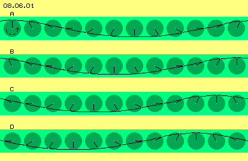
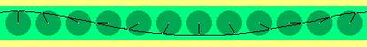
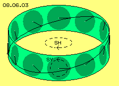

Meereswellen
In Teil 03. ´Lokale Äther-Bewegungen´ wurde das Bewegungsmuster von Potentialwirbelwolken entwickelt. Ein Ausgangspunkt der Überlegungen waren Meereswellen, weil diese meilenweit über den Ozean vorwärts ´stürmen´ - real aber das Wasser nur auf relativ kleinen Kreisbahnen drehend ist. Aus relativ kleinräumiger Wasserbewegung ergibt sich also die Erscheinung einer weitläufigen Bewegung.

Auch Äther ist ortsfest und nur auf begrenzten Radien schwingend. Dennoch basieren darauf die Bewegungen materieller Teilchen, ihrer Translation wie auch Rotation. Im Folgenden wird die Parallele zwischen Meeres-Wellen und Äther-Schwingen nochmals diskutiert.
In Bild 08.06.01 sind zwölf ´Uhren´ (dunkelgrün) in einer Zeile dargestellt. Alle Uhren drehen gegen den Uhrzeigersinn, ihre Zeiger sind allerdings jeweils um eine Stunde versetzt. Am Ende jedes Uhrzeigers befindet sich ein beobachteter Ätherpunkt. Zwischen diesen Ätherpunkten ist eine Verbindungslinie eingezeichnet, welche benachbarte Ätherpunkte repräsentiert. Die Verbindungslinie zeigt einen wellenförmigen Verlauf.
In vier Zeilen sind die zwölf Uhren dargestellt während der Drehung ihrer Zeiger. In Zeile A weist der Zeiger der linken Uhr nach oben. Die Zeile B zeigt die Situation nach Links-Drehung um 30 Grad (die linke Uhr zeigt nun 11 Uhr an). Zeile C und Zeile D zeigen die Positionen wiederum nach jeweils 30 Grad Links-Drehung (die linke Uhr zeigt 10 Uhr und dann 9 Uhr an). Analog drehen in jeder Zeile alle übrigen Uhren.
Während dieser Drehungen zeigt die Verbindungslinie immer die gleiche Form, sie wandert lediglich nach links. In Zeile A rechts-oben ist z.B. ein Wellenberg gegeben, welcher in den Zeilen darunter nach links verschoben ist. Nochmals deutlicher wird das in der entsprechenden Animation visualisiert. Obwohl aller Äther nur an diesem relativ kurzen Radius schwingend ist, ergibt sich die Erscheinung einer rasch nach links laufenden Wellen-Bewegung.

Diese Erscheinung ist also durchaus analog zur Meereswelle. Diese stellt allerdings eine Bewegung nur in den oberen Wasserschichten dar mit der Wasseroberfläche als ´Verbindungslinie´. Darüber hinaus können sich im Wasser die Teilchen gegeneinander verschieben und auch um eine Achse rotieren. Im Äther dagegen läuft diese Wellenbewegung mitten durch den Äther, d.h. oberhalb und unterhalb muss aller Äther synchron mit-schwingen, eben weil Äther keine Teilchen kennt.
Im Kreis schwingende Welle
In einer Potentialwirbelwolke kann keine Bewegung existieren, die fortwährend in nur eine Richtung läuft. Dieses schwingende Band muss in sich zurück verlaufen, also im Kreis herum angeordnet sein. In Bild 08.06.03 sind diese zwölf ´Uhren´ im Kreis aufgestellt. In dieser Position ist der Zeiger der Uhr rechts außen auf 12 Uhr und der Zeiger der linken Uhr auf 6 Uhr gerichtet. Die Wellen-Bewegung ist also rechts in ihrer oberen und links in ihrer unteren Position.
Wenn alle Uhren links-drehend sind, wandert dieser Wellenberg rechts-drehend (von oben gesehen) um die Systemachse. Diese Bewegung entspricht dem Schwingen in horizontaler Ebene, wie mittig durch den gestrichelten Pfeil SH angezeigt ist. Zugleich schwingt rundum der Äther vertikal dazu, wie durch die Uhren angezeigt bzw. wie hier durch den Pfeil SV markiert ist. Wie im vorigen Kapitel festgestellt wurde, ergeben sich reale Bewegungen immer aus der Überlappung von (mindestens) zwei Kreisbewegungen, hier aus diesem Schwingen (SH und SV) in horizontaler und vertikaler Ebene zugleich.

Aus diesen beiden Bewegungen resultiert das Schwingen auf einer diagonalen Ebene, welche hier durch die Wellen-Kurve repräsentiert wird. Der Wellenberg ist rechts positioniert, wandert aber wie die gesamte Welle im Kreis herum. Bei einem Elektron wird diese Bewegung als ´Spin´ bezeichnet, der als eine Rotation verstanden wird (so wie es der Eindruck dieser scheinbaren Drehung vermittelt).
Tatsächlich aber ist es nur ein ´schwappendes Schwingen´. Wenn man im Zentrum einen scheibenförmigen Bereich von Äther betrachtet, dann schwingt der um die Systemachse und zugleich neigt sich der Rand dieser Scheibe auf- und abwärts. Diese Bewegung entspricht noch immer der eines Schwing-Schleifers, nur dass hier das Schleif-Material zusätzlich ´flattert´ - wie eine ´Schwabbel-Scheibe´ (allerdings nicht rotierend, sondern schwingend). Im folgenden Kapitel wird dieser Sachverhalt noch einmal verdeutlicht.
Primär und Sekundär
Hier soll zunächst nur folgendes Prinzip der Äther-Bewegungen festgehalten werden: In lokal begrenzten Einheiten kann sich nicht aller Äther nur in eine Richtung bewegen. Also muss eine Überlagerung senkrecht dazu statt finden (wie im vorigen Kapitel festgestellt wurde). Auch diese kann nicht rundum vollkommen parallel verlaufen. Also muss ein ´versetztes´ Schwingen erfolgen (hier repräsentiert durch die Uhren) - und ´seltsamerweise´ resultiert daraus eine sekundäre, übergeordnete Bewegungsform (hier der umlaufenden Welle).
Mit dieser Diskussion der ´im Kreis laufenden Meereswellen´ sollte dargestellt werden, dass trotz prinzipiell ortsfestem Medium die Erscheinung von weiträumigen Bewegungen auftreten kann.
Obwohl Äther prinzipiell ortsfest ist, kann versetztes Schwingen durchaus die Erscheinung umlaufender Wellen oder von Rotation bzw. Spin ergeben,
bei lokalen Wirbelsystemen des Mikro- wie auch des Makrobereiches.
|
Diese Erscheinung der Welle ist insofern nicht real, als die Ätherpunkte (bzw. das Wasser) sich nicht wirklich vorwärts bewegen. Andererseits ist diese Welle nicht reine ´Illusion´, weil sie durchaus reale Auswirkungen haben kann.
Bei Meereswellen nutzen z.B. die Wellenreiter diese Erscheinung für einen realen Vortrieb. Die Surfer gleiten den Abhang hinunter, den die sich hinter ihnen auftürmende Welle bildet. Allerdings kommen sie nie im Wellental an - sofern sie sich auf dem Board lange genug halten können. Dieses ´Hinunter-Fahren´ ist eine Illusion, weil man sie gleichsetzt mit einer Abfahrt per Ski, wo der Vortrieb aufgrund Gravitation zustande kommt. Tatsächlich wird an der Vorderseite dieser Meereswellen das Wasser fortwährend angehoben. Bezogen auf diese Hubbewegung stellt das Board eine schiefe Ebene dar und daraus erst ergibt sich eine Vortriebs-Komponente.
Analog dazu kann auch aus der nur scheinbaren Welle im Äther durchaus reale Bewegung resultieren. Man könnte z.B. daran denken, dass Elektronen auf einer solchen Welle um einen Atomkern kreisen (was sich real aber anders darstellt). Ein Sonnen-System stellt im Prinzip eine riesige Potentialwirbelwolke dar. Kleinere Wirbelsysteme wie Atome oder auch ganze Ansammlungen davon (wie z.B. Planeten) ´reiten bzw. surfen´ auf solchen umlaufenden Wellen um das Zentrum (was umfangreich erst in späteren Kapiteln darzustellen ist). Vorweg sind noch andere typische Bewegungen des Äthers anzusprechen.